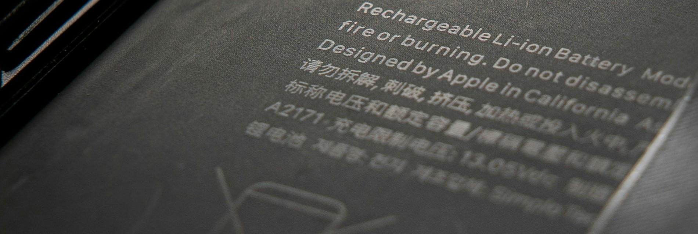

MEDINSPAIN
Innovative methods and domestic value chain for the circular economy of energy storage systems, including sorting, reuse,recycling and processes automatization for the recovery of critical materials.
| Period | 2025 - 2028 |
|---|---|
| Funding | CDTI & AEI, Spanish Ministry of Science, Innovation and Universities (MICIU) | 8,245.522€ (235.548€, DEUSTO) |
| Principal Investigator | Lola Fariñas, DEUSTO |
| Collaborators | Bosonit, Bitmetric, Dlyte, PicVisa, Torrecid, A3, LEITAT (CDTI) & CIDETEC, DEUSTO, CSIC (AEI) |
| Research Line | Energy Storage / Batteries |
| Reference | PLEC2024-11140 |
Description
MEDINSPAIN aims to optimize battery resources and waste for reuse, recycling, and critical material recovery. It develops pilot solutions for automated sorting, discharging, and dismantling, reducing carbon footprint and integrating a digital passport for traceability. It promotes direct recycling and circularity within the battery value chain.
Objectives
Our work will contribute to the project by developing and applying advanced air-coupled ultrasound techniques for battery cell classification prior to recycling. Non-destructive ultrasonic inspection technologies will be explored, establishing correlations with standard electrical characterization parameters. Additionally, the feasibility of an ultrasonic system for differentiating battery chemistries will be assessed, enabling automated sorting. This research will optimize recycling processes and enhance material traceability, positioning DEUSTO as a leader in the application of ultrasound technologies in the energy storage sector and circular economy.
- [Objective 1]
- [Objective 2]
- [Objective 3]
Images